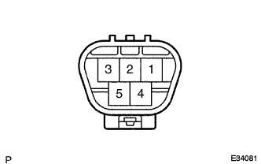

Wind shield wipmotor ASSY single inspection |
| 1. Wind shield wipmotor ASSY inspection |
LO operation inspection
|  |
Confirm that the windshield wipa tamor ASSY operates at a low speed (LO) when the battery is positive to the 5 (+1) terminal of the connector and the battery negative to the 4 (e) terminal.
Hi operation inspection
Confirm that when the battery plus the battery plus to the 3 (+2) terminal, and the battery minus to the 4 (e) terminal is connected to the terminal, the windshield wipa tamor ASSY operates at high speed (Hi).